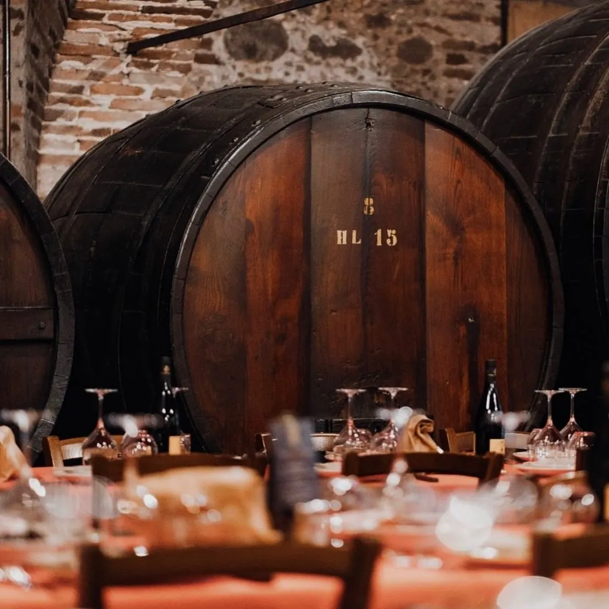
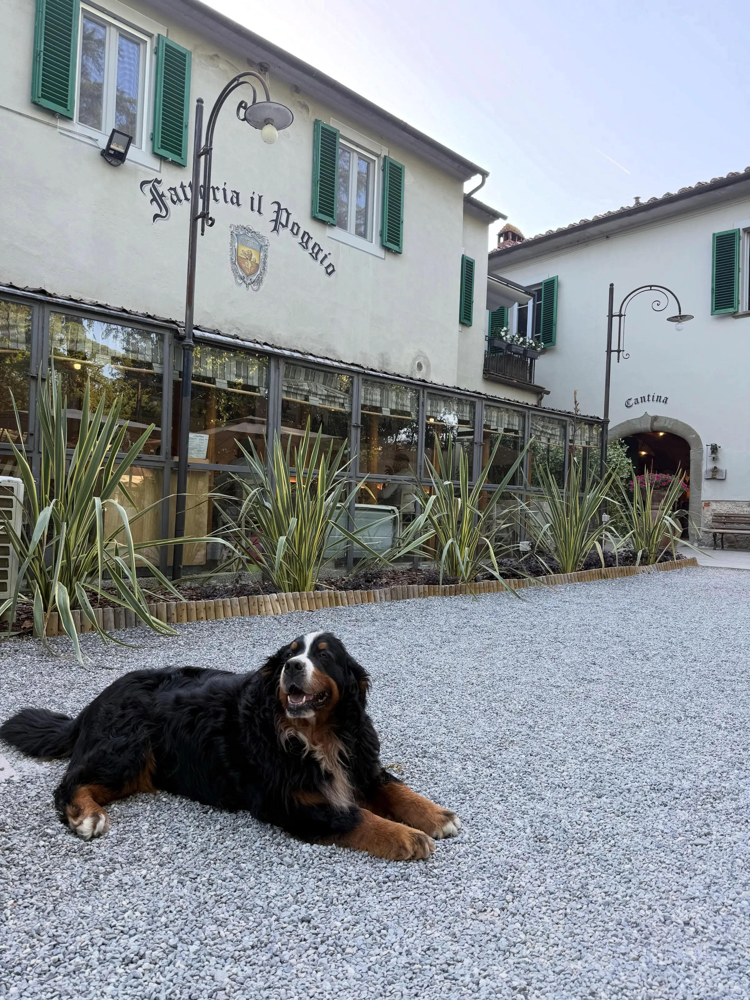

1845Il nome gira già
Scritti di metà Ottocento parlano già della fama dei vini del Poggio, sul crinale che guarda la Val di Nievole.
 Fattoria il Poggio
Fattoria il Poggio


Montecarlo di Lucca · dal 1963
Visite guidate in vigna e in cantina, degustazioni e cucina toscana, nella fattoria della famiglia Rossi.
La cantina
Questa porta si apre dal 1963.
Scritti di metà Ottocento parlano già della fama dei vini del Poggio, sul crinale che guarda la Val di Nievole.

Gualtiero Rossi e la moglie Iole, che facevano i fattori, rilevano dalla famiglia Fratini l'ex tenuta dei Conti della Gherardesca: 26 ettari, allora dedicati al bestiame. Pianta dopo pianta ridanno vita a oliveti e vigneti.

Nasce la denominazione e Gualtiero imbottiglia il suo Montecarlo DOC. Da una fattoria di bestiame a una cantina vera, in sei anni.

Dopo Gualtiero la cantina la portano avanti Iole e il figlio Giancarlo. Negli anni '90 i vini del Poggio cominciano a viaggiare fuori dall'Italia.

Iole e Giancarlo finiscono di ristrutturare tutti gli spazi dell'agriturismo. Accanto a vino e olio arriva la cucina lucchese.
La fattoria è di Giancarlo Rossi, che continua a fare vino e olio e ad apparecchiare per chi passa da qui, da vicino e da lontano.
Il motto del nostro stemma: le avversità non ci fermano.
La visita guidata
Te lo spieghiamo camminando: in vigna, tra gli ulivi e in cantina. Questa pagina fa lo stesso giro, tappa per tappa.


Tappa 1 Vino
Collina, terreni ricchi di minerali e uve che qui non ti aspetti. Accanto a Sangiovese e Trebbiano crescono Syrah, Roussanne e Sauvignon, arrivati a Montecarlo dalla Francia intorno al 1870. Per questo i vini di qui sono diversi dal resto della Toscana.
Tappa 2 Vino
È il giorno che aspettiamo tutto l'anno. L'uva si taglia e si porta in cantina nelle cassette, con la torre di Montecarlo a guardare dalla collina di fronte.

Tappa 3 Vino
Una botte è fatta solo di doghe e cerchi di ferro: niente colla, niente chiodi. Dentro il vino, dopo la fermentazione a temperatura controllata, decide il tempo: sei mesi di legno per l'Incantate Bianco, diciotto di barrique per l'Incantate Rosso.

Tappa 4 Vino
Quattro Montecarlo DOC e due IGT Toscana. Circa 25.000 bottiglie di Montecarlo Bianco e 20.000 di Rosso; delle etichette di punta poche migliaia, 3.000 di Otium Rosso. Quella che vedi è l'Incantate Rosso, con la casa disegnata in etichetta.

Tappa 5 Olio
Soprattutto Frantoiano e Leccino, coltivati qui. In autunno si stendono le reti sotto le piante e si raccoglie: nell'olio finiscono solo olive nostre.
Tappa 6 Olio
Estratto a freddo, solo con mezzi meccanici, poi lasciato decantare e filtrato in modo naturale. Esce giallo dorato con riflessi verdi, fruttato e appena piccante.
Tappa 7 Assaggio
Il giro finisce a tavola: 4 o 6 vini di nostra produzione e il Vin Santo, accompagnati dai piatti della nostra cucina.

Giro di vigne e ulivi, poi 4 o 6 vini, Vin Santo e piatti della cucina.
Su prenotazione, minimo 6 persone

Pasta fresca e condimenti preparati con i nostri chef. Poi si mangia quello che hai fatto.
Su prenotazione, minimo 8 persone

Tour organizzati, crociere e comitive. Parliamo inglese, tedesco e francese.
Programma su misura
4,7 su 5 su TripAdvisor per le visite · 94% di recensioni positive su Facebook
Spediamo in Italia e all'estero

Ordini vino, olio e aceto da qui: li imballiamo noi e partono da Montecarlo, in Italia e all'estero. Se passi in fattoria, nel negozio trovi tutti i prodotti e puoi farteli spedire direttamente a casa.
Menù alla carta di tradizione lucchese e toscana, con opzioni vegetariane e vini di casa. In sala, nell'antica cantina tra le botti o all'aperto sotto la pergola.


Vino, acqua e caffè compresi. Il menù è lo stesso per tutto il tavolo. Pane e coperto 2 € a persona.
Elenco degli ingredienti e degli allergeni disponibile su richiesta al personale.

Sale, cantina, pergola e giardino, per decine di persone o per poche. Dalla cucina ai vini, pensiamo a tutto noi.
Il cancello è ai piedi di Montecarlo, tra Lucca e Montecatini. Parcheggi e percorri il viale alberato fino alla corte.

Richiesta pronta. In questa anteprima non parte nessun messaggio: nel sito vero arriva a info@fattoriailpoggio.com.